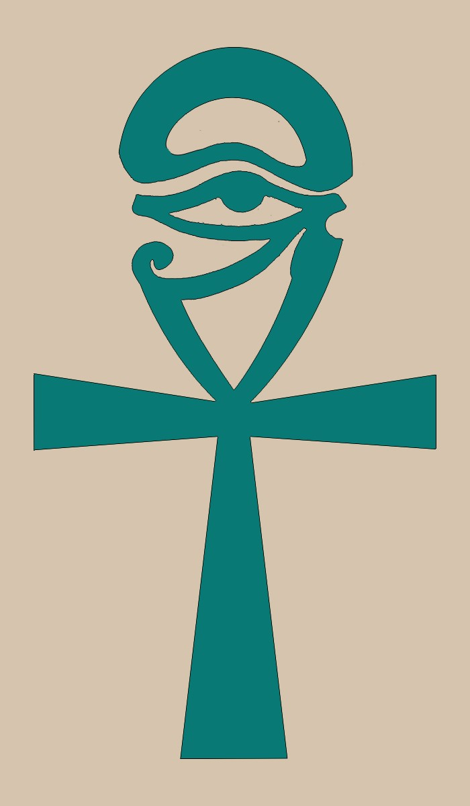
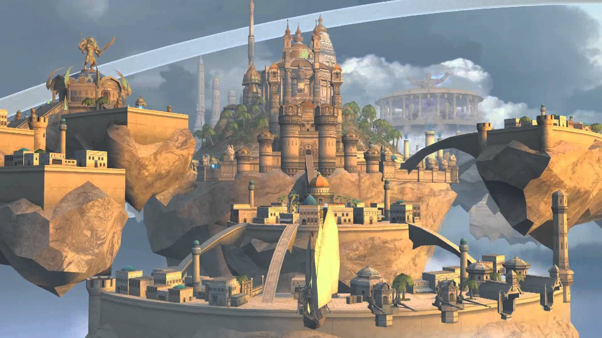
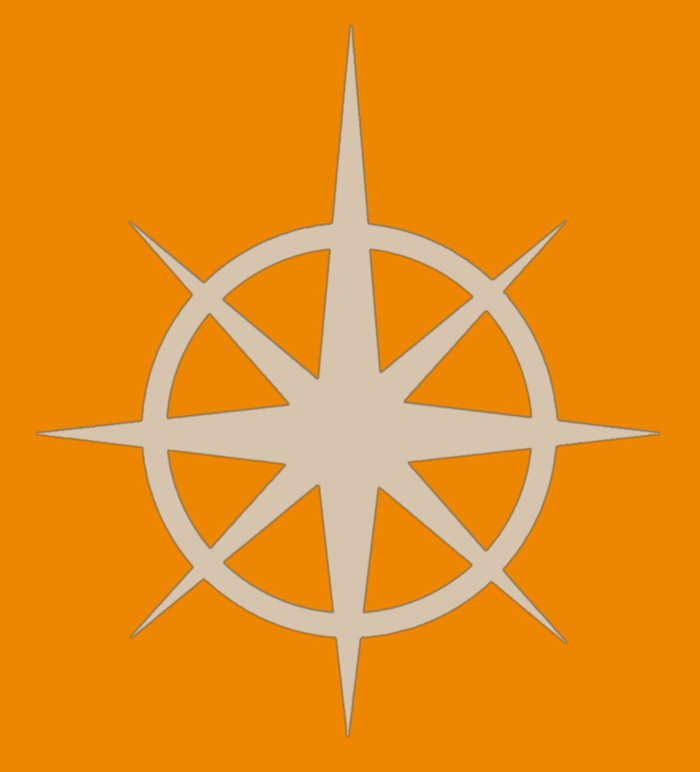

Miasto Akademia
Motto: "Wszystkie sekrety zostaną poznane, kluczem jest czas."



Charakterystyka:
- Społeczeństwo: Czarodzieje, Magowie
- Przypisane kolory: szafranowy i złoty
- Bóstwa: Sylath – Smok Powietrza, Czarodzieje nie traktują jednak Smoków jako bóstwa tylko jako potężne istoty. Wierzą, że wiedza i mądrość dadzą im moce podobne, jakie mają Smoki
- Filozofia: „Bez Bogów, bez Mistrzów. Wiedza to Potęga, Potęga to wolność.” Wszechświat to zagadka, która trzeba rozwiązać.
- Królestwo: Srebrne Miasta
- Stolica: Al – Safir, Kopuła Niebios
- Symbole: Krzyż Wiedzy, Srebrna Gwiazda
Opis:
Czarodzieje z zamku Academy to dumni poszukiwacze wiedzy i władcy naturalnego porządku. Społeczeństwo jest oddane wiedzy i mądrości. Magowie spędzają swe życie studiując i opisując okultystyczne obrzędy, oraz jak i czemu mogą służyć. Senat Czarodziei, zwany Kręgiem Dziewięciu włada Srebrnymi Miastami, jednak każde z miast mniej lub bardziej jest niezależne od Senatu i częściowo ma wolną rękę, co do swoich poczynań. Mieszkańcy, którzy nie są uzdolnieni magicznie, traktowani są jako obywatele drugiej kategorii. Tylko umiejętności magiczne otworzą drogę do studiów na magicznych uczelniach. Magia nauczana jest w akademiach, nad którą sprawują pieczę potężni Czarodzieje. Akademie to prawie święte miejsca, i zależnie gdzie adepci pobierają nauki zależy też, jak zdobywają wiedzę, czego się nauczą i jaką rolę będą pełnić w społeczeństwie. Czarodzieje tak kierują nauką i Magami w Akademiach, by poszczególne z nich zawzięcie ze sobą rywalizowały, wyłaniając najlepszych adeptów. Czarodzieje mają pieczę nad społeczeństwem i każdą inna istotą, czy to żywą, czy przywołaną magicznie.
(RSS - Rok Siódmego Smoka)
Starożytność
0 RSS: Objawienie Siódmego Smoka
Sar-Elam pierwszy Czarodziej z Zakonu Smoka zgłębił naturę wszechrzeczy i świata duchów, poznał wyższą formę bytu i wkroczył na ścieżkę potęgi. Oświecony swym nowym rozumieniem porządku świata, Sar-Elam staje się Siódmym Smokiem.
62 RSS: Wielka Schizma Siedmiu
Schizma pomiędzy uczniami Sar-Elama, którzy nie potrafili pogodzić się z obraną ścieżką przez Siódmego Smoka, zbyt szybko pragnęli władzy i potęgi, chcieli zająć miejsce Siódmego Smoka. Sar-Antor zakłada Zakon Ślepych Braci, w skład którego wchodzą uzdrowiciele, jasnowidzący i balsamiści, wszyscy oni są wierni Smokowi Ładu – Asha. Sar-Badon zakłada wojowniczy Zakon Smoczych Jeźdźców, są oni zdyscyplinowani i ślepo lojalni. Inni uczniowie prowadzeni przez Sar-Shazzara, najbardziej utalentowanego z nich, wyruszają na południowe pustynie, by tam założyć królestwo Siedmiu Miast (pierwsze królestwo Magii).
330 RSS: Pierwsze Zaćmienie – Wojna Krwawego Księżyca. Stworzenie Orków.
Totalne Zaćmienie prowokuje Demony do ucieczki ze swego wymiarowego więzienia. Lordowie Chaosu wydostają się na powierzchnię i sieją zniszczenie na ziemiach Elfów. Elfy, zaskoczone przez ten niespodziewany atak, szybko ustępują Demonom. Czarodzieje z Siedmiu Miast widząc co się dzieje, wysyłają posiłki, by wspomóc Elfy. Ponadto Czarodzieje zdobyli krew Demonów i eksperymentują z nią na niewolnikach i kryminalistach. W rezultacie udaje im się stworzyć Orków. Siły Przymierza wspomagane przez Orków szybko pokonują Demony. Wszystkie pozawymiarowe istoty pierzchają w popłochu do swego piekielnego więzienia. Orkowie zasiedlają Imperium Sokoła i ziemie należące do Siedmiu Miast. Mimo, że wygrali wojnę z Demonami nie uzyskali wolności i traktowani są jako niewolnicy i mięso armatnie.
467 – 504 RSS: Krucjaty przeciwko Orkom
Wybucha powstanie Orków w Siedmiu Miastach, które szybko przenosi się na terytorium Imperium Sokoła. Odrzucając swoich dotychczasowych mistrzów i Smoki, Orkowie deklarują, że stają się wolnymi istotami. W Świętym Imperium Sokoła powstaje zamysł powstania Krucjat, by ujarzmić Orków i nawrócić ich na wiarę w Smoki. Długotrwające walki są bardzo brutalne, jednak Siedmiu Miastom jak i Świętemu Imperium Sokoła udaje się stopniowo wypędzić Orków. Niedobitki uciekaja gdzie popadnie, na południowe pustynie, na stepy północno – wchodnie i na Barierę Wysp na wschodzie. Wiedząc, że najwięcej Orków jest na Barierze Wysp, Imperium Sokoła wyrusza z ogromną flotą by raz na zawsze pozbyć się Orków. Potężny sztorm zatapia całą flotę a Władca Imperium Sokoła uznaje to za znak od Smoków i każe zakoączyć wszyskie Krucjaty przeciwko Orkom.
512 RSS: Stworzenie Ludzi – Bestii
Ludzie – Bestie (minotaury, centaury, harpie...) stworzeni zostali przez Czarodziei z Siedmiu Miast jako słudzy, istoty do rozrywki i strażnicy Siedmiu Miast. Stworzenie tych istot miało na celu zapełnienie luki jaka powstała po buncie Orków.
610 – 660 RSS: Narodziny Nekromantów
Nekromanci rosną w siłę i w końcu stają się potężną frakcją w Siedmiu Miastach.
751 – 770 RSS: Wypędzenie Nekromantów – Wojna Domowa w Siedmiu Miastach
Zazdrośni potęgi, jaką uzyskali Nekromanci, Czarodzieje Siedmiu Miast rozpoczęli szeroko rozpowszechnione prześladowanie Nekromantów. Poczynając od zagrabienia ich majątków, poprzez banicję a na publicznych egzekucjach kończąc. Długa i okrutna wojna spowodowała, że ziemia została wyjałowiona a starożytne Siedem Miast legło w gruzach...
Nowożytność
771 RSS: Plany Srebrnej Ligi
Ocaleni Czarodzieje z pogromu Siedmiu Miast weszli w skład Srebrnej Ligi i w rezultacie założyli Srebrne Miasta (drugie królestwo Magii) na ziemiach południowych. Nekromanci pierzchają do nawiedzonej i owianej bardzo złą sławą doliny Heresh, leżącej na dalekim wschodzie.
813 – 822 RSS: Wojna Złamanego Berła
Nekromanci usilnie dążą do zniszczenia Srebrnej Ligi, ale Czarodzieje są bardzo potężni i w koącu najeżdżają dolinę Heresh. Nekromanci w końcu zostają pokonani a ich królestwo jest spustoszone.